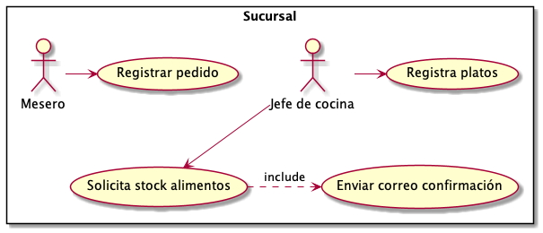
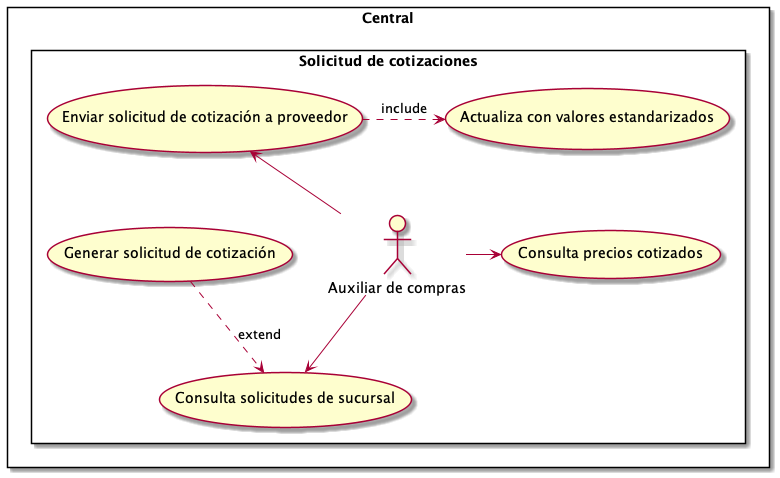
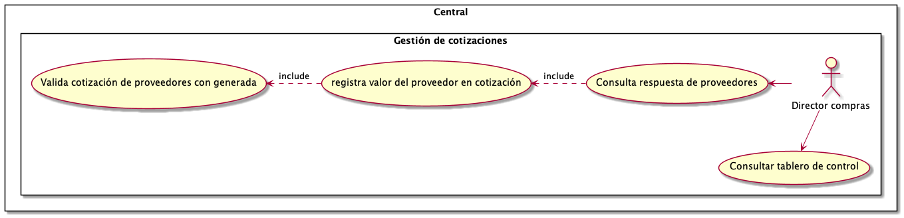
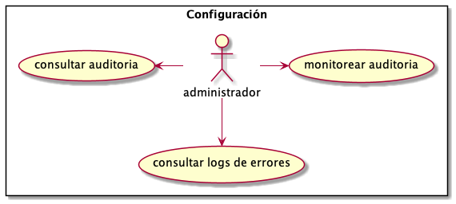
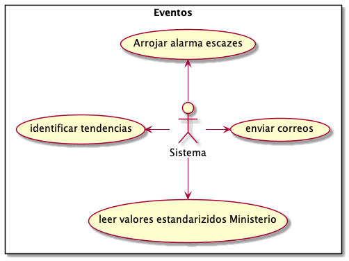

SRS¶
Introducción¶
El propósito de este SRS es describir los requerimientos funcionales y no funcionales del sistema de abastecimiento de alimentos para la cadena Konrad Gourmet. Este documento está dirigido a los miembros del equipo de desarrollo y a los interesados. Los documentos especificados aquí serán incluidos en el release 1.0
Ámbito del proyecto¶
Konrad Gorumet es una cadena de restaurantes que cuenta con varias sucurales. Anteriormente, el proceso para consultar y actualizar su abastecimiento era manual, por lo que era imposible consultar cifras exactas en tiempo real de todo su inventario (los alimentos necesarios para los platos que ofrecen a su cliente final). Esto ocasionaba pérdidas por contar con cifras extactas con las que solicitar cotizaciones a sus proveedores.
A raiz de eso, surgió la necesidad de implementar un sistema que permita seguir el inventario de las sucursales de Konrad Gorumet y que también automatize y optimize las negociociones con sus proveedores.
Descripción general¶
Konrad Gourmet es un sistema para cuantificar el inventario de varias sucursales de comida. El sistema genera órdenes de compras, facturas, y resúmenes del inventario de distintas sucursales de Konrad Gourmet. Una vez generada una cotización, el sistema le provee al Director de Compras facilidades para validar si la respuesta del proveedor es factible o no, de acuerdo a la respuesta de otros proveedores, así como a los precios de los alimentos publicados por la entidad gubernamental correspondiente.
Funcionalidades del sistema¶
Los siguientes casos de uso fueron identificados. Se clasifican se agruparon para facilitar su comprensión en 4 áreas:
Sucursal
Central
Opciones de configuración
Eventos automáticos o de soporte
Sucursal¶
{kind=link}
Central¶
 {kind=link}
{kind=link}
Opciones de configuración¶
{kind=link}
Eventos automáticos o procesos de soporte¶
{kind=link}
Requerimientos de interfaces externas¶
Interfaces de software¶
La tecnología utilizada debe ser de libre licenciamiento
Los lenguajes, frameworks y librerías deben ser las últimas versiones estables, reconocidas, con- soporte y de buenas prácticas
Cualquier servicio que se tenga que exponer hacia un sistema externo, se debe hacer a través de SOAP
Atributos de calidad¶
Requerimientos de usabilidad¶
El sistema debe ser “responisive”, para ser utilizado desde dispositivos móviles
El sistema debe poder cambiar de imagen corporativa de manera parametrizada, sin necesidad de
recurrir a un diseñador gráfico
Requerimientos de confiabilidad¶
El sistema debe poder recuperarse de desastres, debe tener un centro de datos alterno
Requerimientos de disponibilidad¶
El sistema debe ofrecer un 99,7% de alta disponibilidad
Requerimientos de desempeño¶
El sistema debe estar en capacidad de atender a 200.000 usuarios concurrentes
El sisteba debe estar en capacidad de procesar 1000 TPS
Requerimientos de seguridad¶
El sistema debe contar con un módulo de autenticación y autorización
El sistema debe poder manejar usuarios, perfiles o roles y permisos
Cualquier comunicación debe estar asegurada con protocolo HTTPS
La contraseña debe cumplir con un patrón de mínimo 8 caracteres que incluyan una mayúscula, una minúscula y un número
La contraseña debe ser almacenada encripatada con algún algoritmo estándar
Los correos emitidos deben estar certificados y con estampa cronológica
Requerimientos de mantenimiento¶
Se espera un crecimiento de 200% en el almacenamiento de los documentos, archivos de carga
y la data - Se debe realizar backup diario de la base de datos - Se debe contemplar el cambio fácil de motor de base de datos - Cada acción del CRUD debe registrar su respectivo movimiento de auditoría con la siguiente información: 1) Acción, 2) Usuario, 3) Fecha, 4) Hora - Cada error producido en el sistema debe quedar registrado en un log
Requerimientos de portabilidad¶
No se solicitaron requerimientos de portabilidad.
Requerimientos específicos¶
UC |
Actores |
Procesamiento |
Salidas |
Excepciones |
|---|---|---|---|---|
Registrar Platos |
Jefe de cocina |
El jefe de cocina de cada uno de los puntos del restaurante en la ciudad puede registrar los platos o menu de este para lo cual debe ingresar 1)Categoria, 2)Producto, 3)Cantidad, 4)Unidad 5)Precio |
El plato se registra en BD |
La vista se recarga nuevamente, pero se muestran errores de validación por cada campo del formulario |
Registrar Pedido |
Mesero |
Llena un formulario con 1) Plato, 2) Cantidad 3) Mesa |
El pedido se registra en BD y se descuentan unidades de producto según el plato |
La vista se recarga nuevamente, pero se muestran errores de validación por cada campo del formulario |
Solicitar stock de alimentos |
Jefe de cocina |
Llena un formulario múltiple con los campos 1) Categoría de producto, 2) Producto (lista desplegable que depende de 1), 3) Cantidad, 4) Marca Unidad |
Se crea una solicitud, se registra en BD y luego se incluye el caso de uso ‘enviar correo’ destinado al solicitante y cuyo cuerpo es un mensaje de confirmación |
La vista se recarga nuevamente, pero se muestran errores de validación por cada campo del formulario |
Enviar Correo |
n/a |
Este UC es incluido dentro de otros casos de uso. |
Se envía un correo con remitente, destinatario y cuerpo establecido según UC que lo incluya. Luego se añade un certificado y una estampa cronológica al final del cuerpo del correo. |
Se envía un correo al remitente indicando que el mensaje no fue enviado y mostrando el correspondiente mensaje de error |
Consulta solicitudes de sucursal |
Auxiliar de compras |
Visualiza una lista de solicitudes de stock por parte de las diversas sucursales. La vista se puede navegar por fecha de solicitud, Producto, Cantidad, Marca, y estado. |
Desde esta vista, se puede seleccionar una solicitud de stock particular y entrar al UC ‘Generar solicitud de cotización. |
n/a |
Generar solicitud de cotización |
Auxiliar de compras |
Se estipula un proveedor (lista desplegable) y un rango de fechas. |
La solicitud de cotización cambia a estado ‘No Enviada’ y ahora se puede consultar |
|
Enviar solicitud de cotización |
Auxiliar de compras |
Se seleccióna una solicitud de cotización que no esté en estado ‘enviada’ y se presiona el boton ‘enviar al proveedor’ |
La solicitud de cotización cambia a estado ‘Enviada’ y se ejecutael UC ‘enviar correo’ destinado al proveedor y ‘Actualiza solicitud con precios estandarizados’ |
|
Actualizar solicitud con valores estandarizadas |
n/a |
Este UC se ejecuta automáticamente al enviar una solicitud. El sistma consulta un servicio expuesto por la entidad gubernamental y añade campo ‘precio sugerido’ a cada producto de la cotización. |
Se actualizan valores de la solicitud en BD, y se deja un registro en el log del sistema de la actualizacións satisfactoria |
Si hay un problema con el servicio de actualización de datos. El estado de la solicitud se revierte y se muestra un mensaje |
Consulta respuesta de proveedores |
Director de Compras |
Recibe en su correo la respuesta de los proveedores. Esta parte del UC es manual y depende enteramente del actor. |
n/a |
n/a |
Registra valor del proveedor en cotización |
Director de Compras |
Luego abre el formulario de la solicitud de cotización respectiva y agrega los valores propuestos por los proveedores en una columna vacía. |
n/a |
n/a |
Valida cotización de proveedores con generada |
Director de Compras |
Por último, presiona el botón validar, el cual ejecutará la lógica de negocio correspondiente. |
Si el valor de la cotización está por encima en más de un 25% del valor estaándar del ministerio, la cotización queda en estado “RECHAZADA”, si la cotización está por debajo en más de un 50% del valor estándar del ministerio, la cotización queda en estado “SOSPECHOSA” y finalmente las que se encuentren dentro de este rango quedan en estado “OPCIONADA”. |
Si faltó un valor por agregar por parte del actor, el formulario se recargará con los valores ingresados y señalará el valor faltante. |
Consulta tablero de control |
Director de Compras |
Vista con tablero de control (BAM) donde muestre los principales KPI del negocio |
|
n/a |
Parametrizar validaciones |
Administrador |
Vista permite alterar los márgenes para determinar si una solicitud es “SOSPECHOSA”, “OPCIONADA” o “RECHAZADA” |
Los márgenes se actualizan en BD. |
Si los márgenes son inconsistentes (el mismo valor para dos estados, o el margen para aceptar es más grande que el de rechazar) la operación no tiene efecto y se muestra un mensaje de error. |
Monitorear auditoría |
Administador |
Vista permite visualizar todas las tablas de la base de datos, con todos sus registros. |
Al ingresar en el detalle de cada fila, se muestra una lista de cambios a cada valor |
n/a |
Consultar logs |
Administrador |
Vista muestra cada arhico de log existente |
Al entrar al dtalle de cada archivo de log, se puede descargar el archivo .txt |
n/a |